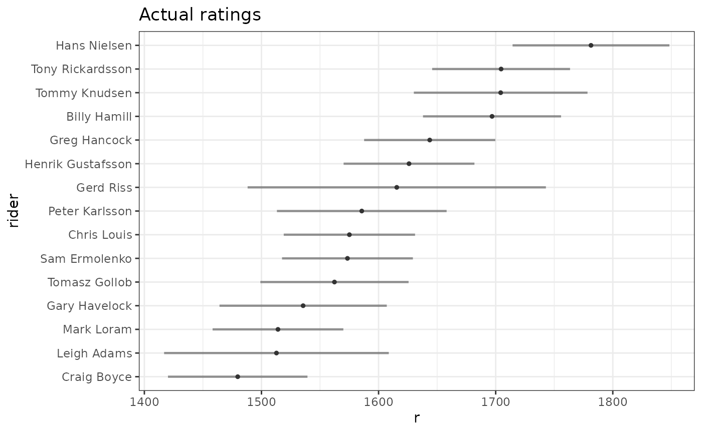
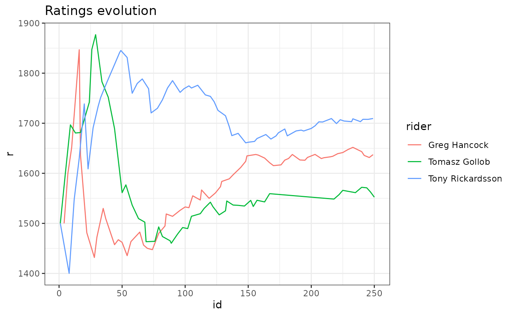

vignettes/sport_in_r.Rmd
sport_in_r.RmdName sport is an abbreviation for Sequential Pairwise
Online Rating Techniques. Package contains functions calculating ratings
for two-player or multi-player matchups. Methods included in package are
able to estimate ratings (players strengths) and their evolution in
time, also able to predict output of challenge. Algorithms are based on
Bayesian Approximation Method, and they don’t involve any matrix
inversions nor likelihood estimation. sport incorporates
glicko algorithm, glicko2, bayesian Bradley-Terry and dynamic logistic
regression. Parameters are updated sequentially, and computation doesn’t
require any additional RAM to make estimation feasible. Additionally,
package is written in c++ what makes computations even
faster.
Before start, it’s recommended to read theoretical foundations of
algorithms in other sport vignette “The theory of the
online update algorithms”.
Package can be installed from CRAN or from github.
install.packages("sport")
devtools::install_github("gogonzo/sport")Package contains actual data from Speedway Grand-Prix. There are two data.frames:
gpheats - results SGP heats. Column
rank is a numeric version of column position -
rider position in race.
gpsquads - summarized results of the events, with
sum of point and final position.
## 'data.frame': 1002 obs. of 11 variables:
## $ id : num 1 1 1 1 2 2 2 2 3 3 ...
## $ season : int 1995 1995 1995 1995 1995 1995 1995 1995 1995 1995 ...
## $ date : POSIXct, format: "1995-05-20 17:00:00" "1995-05-20 17:00:00" ...
## $ round : int 1 1 1 1 1 1 1 1 1 1 ...
## $ name : chr "Speedway Grand Prix of Poland" "Speedway Grand Prix of Poland" "Speedway Grand Prix of Poland" "Speedway Grand Prix of Poland" ...
## $ heat : int 1 1 1 1 2 2 2 2 3 3 ...
## $ field : int 3 2 1 4 4 2 1 3 3 2 ...
## $ rider : chr "Chris Louis" "Gary Havelock" "Tomasz Gollob" "Tony Rickardsson" ...
## $ points : int 3 0 2 1 2 0 3 1 1 2 ...
## $ position: chr "1" "4" "2" "3" ...
## $ rank : num 1 4 2 3 2 4 1 3 3 2 ...Data used in sport package must be in so called long
format. Typically data.frame contains at least
id, name of the player and rank,
with one row for one player within specific match. Package allows for
any number of players within event and allows ties also.
In all methods, output variable needs to be expressed as a
rank/position in event. Don’t mix up rank output with typical 1-win,
0-lost. In sport package output for two player game should
be coded as 1=winner 2=looser. Below example of two matches with 4
players each.
## id rider rank
## 1 1 Chris Louis 1
## 2 1 Gary Havelock 4
## 3 1 Tomasz Gollob 2
## 4 1 Tony Rickardsson 3
## 5 2 Henrik Gustafsson 2
## 6 2 Jan Staechmann 4
## 7 2 Sam Ermolenko 1
## 8 2 Tommy Knudsen 3To compute ratings using each algorithms one has to specify formula.
- RHS of the formula have to be specified with
player(player) term or player(player | team)
when players competes in team match. player(...) is a term
function which helps identify column with player names
and/or team names. - LHS of the formula should contain
rank term which points to column where results (ranks) are
stored and id (optional). RHS should rather be specified by
rank | id to split matches - if id is missing
all data will be computed under same event id.
glicko <- glicko_run(formula = rank | id ~ player(rider), data = data)
glicko2 <- glicko2_run(formula = rank | id ~ player(rider), data = data)
bbt <- bbt_run(formula = rank | id ~ player(rider), data = data)
dbl <- dbl_run(formula = rank | id ~ player(rider), data = data)
print(glicko)##
## Call: rank | id ~ player(rider)
##
## Number of unique pairs: 1500
##
## Accuracy of the model: 0.63
##
## True probabilities and Accuracy in predicted intervals:
## Interval Model probability True probability Accuracy n
## <fctr> <num> <num> <num> <int>
## 1: [0,0.1] 0.066 0.196 0.804 92
## 2: (0.1,0.2] 0.152 0.305 0.695 243
## 3: (0.2,0.3] 0.251 0.294 0.706 299
## 4: (0.3,0.4] 0.350 0.424 0.575 416
## 5: (0.4,0.5] 0.454 0.448 0.549 481
## 6: (0.5,0.6] 0.553 0.560 0.556 419
## 7: (0.6,0.7] 0.650 0.576 0.575 416
## 8: (0.7,0.8] 0.749 0.706 0.706 299
## 9: (0.8,0.9] 0.848 0.695 0.695 243
## 10: (0.9,1] 0.934 0.804 0.804 92Objects returned by <method>_run are of class
rating and have their own print and
summary which provides simple overview.
print.sport shows
condensed informations about model performance like accuracy and
consistency of model predictions with observed probabilities. More
precise overview are
given by summary by showing ratings, ratings deviations and
comparing model win probabilities with observed.
summary(dbl)## $formula
## rank | id ~ player(rider)
##
## $method
## [1] "dbl"
##
## $`Overall Accuracy`
## [1] 0.635
##
## $`Number of pairs`
## [1] 3000
##
## $r
## rider r rd
## <char> <num> <num>
## 1: rider=Chris Louis 0.355 0.048
## 2: rider=Gary Havelock 0.865 0.116
## 3: rider=Tomasz Gollob 0.523 0.073
## 4: rider=Tony Rickardsson 1.167 0.048
## 5: rider=Henrik Gustafsson 0.957 0.048
## 6: rider=Jan Staechmann -1.769 0.292
## 7: rider=Sam Ermolenko 0.243 0.049
## 8: rider=Tommy Knudsen 0.855 0.122
## 9: rider=Andy Smith -0.946 0.068
## 10: rider=Hans Nielsen 1.522 0.053
## 11: rider=Mark Loram -0.082 0.048
## 12: rider=Mikael Karlsson -1.464 0.292
## 13: rider=Craig Boyce -0.330 0.059
## 14: rider=Dariusz Śledź 0.103 0.774
## 15: rider=Greg Hancock 1.079 0.049
## 16: rider=Marvyn Cox -1.011 0.054
## 17: rider=Billy Hamill 1.235 0.054
## 18: rider=Peter Karlsson 0.600 0.175
## 19: rider=Franz Leitner -0.597 0.735
## 20: rider=Gerd Riss 0.002 0.540
## 21: rider=Josh Larsen -2.481 0.735
## 22: rider=Lars Gunnestad -0.480 0.735
## 23: rider=Jason Crump -0.167 0.264
## 24: rider=Joe Screen -0.155 0.264
## 25: rider=Leigh Adams -0.333 0.358
## 26: rider=Stefano Alfonso -1.733 0.735
## rider r rd
## <char> <num> <num>To visualize top n ratings with their 95% confidence interval one can
use dedicated plot.rating function. For dbl
method top coefficients are presented which doesn’t have to be player
specific (ratings). It’s also possible to examine ratings evolution in
time, by specifying players argument.


Except dedicated print,summary and
plot there is possibility to extract more detailed
information for analyses. rating object contains following
elements:
names(glicko)## [1] "final_r" "final_rd" "r" "pairs"rating$final_r and rating$final_rd
contains the last estimate of the ratings and ratings deviations. For
glicko2 there is also
rating$final_sigma.
r contains data.table with prior
ratings estimations from first event to the last. Number of rows in
r equals number of rows in input data.
pairs pairwise combinations of players in analyzed
events with prior probability and result of a challenge.
tail(glicko$r)## id rider r rd
## <int> <char> <num> <num>
## 1: 250 Mark Loram 1514.506 28.44330
## 2: 250 Peter Karlsson 1597.472 37.17764
## 3: 250 Tomasz Gollob 1552.346 32.34887
## 4: 251 Chris Louis 1579.143 28.47306
## 5: 251 Craig Boyce 1477.183 30.23765
## 6: 251 Hans Nielsen 1778.792 34.01788
tail(glicko$pairs)## id rider opponent Y P
## <int> <char> <char> <num> <num>
## 1: 251 Chris Louis Craig Boyce 0 0.6415045
## 2: 251 Chris Louis Hans Nielsen 0 0.2426797
## 3: 251 Craig Boyce Chris Louis 1 0.3584955
## 4: 251 Craig Boyce Hans Nielsen 0 0.1520817
## 5: 251 Hans Nielsen Chris Louis 1 0.7573203
## 6: 251 Hans Nielsen Craig Boyce 1 0.8479183Examples presented in package overview might be sufficient in most cases, but sometimes it is necessary to adjust algorithms to fit data better. One characteristic of the online update algorithms is that variance of the parameters drops quickly to zero. Especially, when the number of events for the player is big ($n_i>100 $), after hundreds iterations rating parameters are very difficult to change, and output probabilities use to be extreme. To avoid these mistakes some additional controls should be applied, which is explained in this section with easy to learn examples.
In all methods formula must contain
rank | id ~ player(player) elements, to correctly specify
the model.
rank denotes column with output (order).
id denotes event id, within which update is
computed.
player(...) function helps to identify column in
which names of the players are stored. player(...) can be
specified in two ways:
player(player) if results of the event are observed
per player.
glicko2 <- glicko2_run(
formula = rank_player | id ~ player(player),
data = data.frame(
id = c(1, 1, 1, 1),
player = c("a", "b", "c", "d"),
rank_player = c(3, 4, 1, 2)
)
)player(player | team) when players competes within
teams, and results are observed per team. This option is not available
in dbl_run which requires only formula for player
matchups.
glicko2 <- glicko2_run(
formula = rank_team | id ~ player(player | team),
data = data.frame(
id = c(1, 1, 1, 1),
team = c("A", "A", "B", "B"),
player = c("a", "b", "c", "d"),
rank_team = c(1, 1, 2, 2)
)
)other variables - available only in dbl_run, which
allows to specify other factors in model.
r and rd
Main functionality which is common between all algorithms is to
specify prior r and rd. Both parameters can be
set by creating named vectors. Let’s suppose we have 4 players
c("A","B","C","D") competing in an event, and we have
players prior r and rd estimates. It’s
important to have r and rd names corresponding
with levels of name variable. One can run algorithm, to
obtain new estimates.
model <- glicko_run(
formula = rank | id ~ player(rider),
data = gpheats[1:16, ]
)We can also run models re-using previously estimated parameters from
model$final_r and model$final_rd in the future
when new data appear.
glicko_run(
formula = rank | id ~ player(rider),
data = gpheats[17:20, ],
r = model$final_r,
rd = model$final_rd
)$final_r## Chris Louis Gary Havelock Tomasz Gollob Tony Rickardsson
## 1799.513 1200.487 1696.809 1400.162
## Henrik Gustafsson Jan Staechmann Sam Ermolenko Tommy Knudsen
## 1599.838 1200.487 1940.042 1400.162
## Andy Smith Hans Nielsen Mark Loram Mikael Karlsson
## 1455.702 1599.838 1799.513 1200.487
## Craig Boyce Dariusz Śledź Greg Hancock Marvyn Cox
## 1508.129 1400.162 1599.838 1200.487weight
All algorithms have a weight argument which increases or decreases
update size. Higher weight increasing impact of corresponding event.
Effect of the weight on update size can be expressed directly by
following formula - $\small R_i^{'} \leftarrow
R_i \pm \omega_i * \Omega_i$. To specify weight
one needs to create additional column in input data, and pass the name
of the column to weight argument. For example weight could
depend on importance of competition. In speedway Grand-Prix last three
heats determine event winner, thus they weight more.
kappa
In situation when player plays games very frequently, rd
can quickly decrease to zero, making further changes limited. Setting
kappa (single value) avoids rating deviation decrease to be
lower than specified fraction of rd. In other words final
rd can’t be lower than initial RD times
kappa
$$\small RD' \geq RD * kappa$$
lambda
In some cases player ratings tend to be more uncertain. If scientist
have prior knowledge about higher risk of event or uncertainty of
specific player performance, then one might create another column with
relevant values and pass the column name to lambda
argument.
# bbt example
data <- data %>%
group_by(rider) %>%
mutate(idle_30d = if_else(as.integer(date - lag(date)) > 30, 1.0, 2.0)) %>%
filter(!is.na(idle_30d))
bbt <- bbt_run(
formula = rank | id ~ player(rider),
data = data,
lambda = "idle_30d"
)In above examples players competes as individuals, and each is ranked
at the finish line. There are sports where players, competes in teams,
and results are reported per team. sport is able to compute
player ratings, and requires only changing formula from
player(player) to player(player | team).
data.frame should always be a long format, with one player
for each row. Ratings are updated according to their contribution in
team efforts. share argument can be added optionally if
scientist have some knowledge about players contribution in match (eg.
minutes spent on the field from all possible minutes).
glicko2 <- glicko2_run(
data = data.frame(
id = c(1, 1, 1, 1),
team = c("A", "A", "B", "B"),
player = c("a", "b", "c", "d"),
rank_team = c(1, 1, 2, 2),
share = c(0.4, 0.6, 0.5, 0.5)
),
formula = rank_team | id ~ player(player | team),
share = "share"
)
glicko2$final_r## a b c d
## 1583.660 1625.489 1394.845 1394.845Output object contains the same elements as normal, with one
difference - pairs contains probability and output per
team, and r contains prior ratings per individuals.
glicko2$pairs## id team opponent Y P
## <int> <char> <char> <num> <num>
## 1: 1 A B 1 0.5
## 2: 1 B A 0 0.5
glicko2$r## id team player r rd sigma
## <int> <char> <char> <num> <num> <num>
## 1: 1 A a 1500 350 0.05
## 2: 1 A b 1500 350 0.05
## 3: 1 B c 1500 350 0.05
## 4: 1 B d 1500 350 0.05